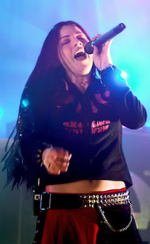
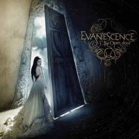

Entrevista
de Amy Lee à Revista Kerrang - Agosto de 2006
Há
quanto tempo vc está morando em Nova York?
Na verdade, eu fiquei neste hotel por
cerca de um mês, em Março, enquanto estava procurando
apartamento e depois eu mudei para minha casa - ela é
vermelha. É uma construção antiga que antes
era uma igreja e eles transformaram em apartamentos. Ele tem
o teto em formato de caverna, é legal. Eu amo Nova York
- há tanta cultura e classe. Acho que meu gosto está
amadurecendo. Los Angeles era legal no começo, mas depois
de um tempo eu estava tipo: "Cara, eu preciso sair
daqui".
Então,
como as coisas têm ido, no geral?
Muito bem. Estou muito feliz. Eu tive
muita coisa crescendo e crescendo, me pondo pra baixo no ano
passado e então eu finalmente disse: "Chega".
Mudei tudo, vendi minha casa, vendi um monte das minhas coisas,
chutei duas pessoas da minha vida e mudei pra cá.
Você
está preocupada em voltar com o novo álbum?
Não muito. É difícil
dizer. Eu amo tanto o novo trabalho, mais até que o último
álbum. Fallen teve muito sucesso. Eu não consigo
imaginar que isto esteja acontecendo pela segunda vez. Eu acho
que ter ajeitado minha mente me ajudou. Se não der certo
e 500 mil pessoas comprarem o álbum ao invés de
14 milhões, eu estarei completamente satisfeita, porque
agora estou tão feliz por ele soar tão bem. Eu
definitivamente o escrevi pensando no que eu queria, e não
no que os fãs queriam, mas do mesmo jeito, no final,
eu estou tipo: "Os fãs vão amar isto".
Só espero que eles amem mesmo.
O Terry Balsamo
(ex-Cold) entrou na banda logo depois do Ben Moody
ter saído no meio da turnê em outubro de 2003.
Você sabia que ele ia acabar como seu parceiro de composição?
Não, nós tivemos muita sorte.
Quando Terry entrou na banda nós nem achávamos
que ele iria ser um membro permanente. Ele ainda estava no Cold
mas eles não estavam em turnê na época,
e ele veio, tocou com a gente por uns meses, nós conversamos
sobre ele e pedimos para que ficasse. Eu escrevi algumas coisas
e ele veio e nos demos bem muito rápido. A primeira coisa
que escrevemos juntos foi uma música que está
no novo álbum: "Snow White Queen".
Eu me sentia insegura e protegida perto do Ben e foi difícil
pra mim me abrir e experimentar, porque me senti meio que "não
salva". O Terry senta lá e diz "Yeah,
isto é demais", apenas me encorajando e me
empurrando para o próximo nível ao invés
de... me segurar.
O novo álbum
soa mais complexo e "cheio" do que o Fallen.
É o que eu queria. Eu tive tanta
energia criativa carregada que eu estava simplesmente morrendo
de vontade de transbordar isto. Eu estava morrendo de vontade
de escrever o tempo todo em que ficamos em turnê. E desta
vez eu estava livre para fazer qualquer coisa sem ter que me
preocupar se as pessoas "engoliriam", ou com o que
ficaria bom, ou com quem eu vou ter problemas.
Ter problemas
com quem?
[Imitando uma voz carrancuda] "Eu
não vou falar sobre isso!". Ele falava isso
antes, mas eu não vou me sentir mal em dizer agora: Ben
sempre quis nos empurrar para um lado mais comercial e eu sempre
quis nos colocar num lado mais criativo e foi aí que
nós começamos a brigar indo cada vez mais e mais
para o fim. Então, me senti livre para fazer escolhas
artísticas, mais do que na última vez.
Você
se referiu ao The Open Door como um álbum "sexy"...
Eu estava pensando na música Lose
Control quando eu disse isto, mas eu odiaria dizer isto
novamente, porque não quero que as pessoas achem que
o álbum é algo do tipo "pop excitantel, como
R&B". É muito díficil descrever. Eu acho
que isso vem do fato de eu ter crescido e eu não estou
insegura. E eu não estou com medo de expressar cada emoção
- inclusive a de se sentir valiosa e me sentir como uma mulher
e me sentir bem comigo mesma. Não que o álbum
seja todo feliz e alegre. Há elementos de tudo.
Você
vê o Evanescence como uma música com que as pessoas
podem ter sexo?
Não (rs). Espero que não,
isto é meio doentio. É tipo, er, sei lá.
Eu não... Talvez Lose Control. Não a
vejo desta forma, na verdade. O que quero dizer é que
eu não poderia, ver a música dessa forma, porque
eu sentava lá e pensava que o baixo estava muito alto,
ou que a bateria não estava alta o bastante, ou que eu
não queria ter cantado daquele jeito.
Com quem você
está saindo?
Ah, este cara. Eu nem tenho falado sobre
meu novo relacionamento. Eu estou meio que tipo: "Ah,
dane-se; eu não quero mais falar sobre relacionamentos".
Nós estamos juntos desde de novembro. Nós nos
conhecemos há muitos anos mas estávamos sem contato;
então, é legal.
Ele é
do mundo do rock?
Não, de forma alguma (rs). Estou
muito feliz quanto a isto. Na verdade, ele é terapeuta.
Então ele é legal, um ótimo ouvinte, muito
estável, uma mudança legal.
Você
está envolvida num processo judicial com seu empresário,
incluindo uma acusação de abuso sexual.
É muito difícil. É
algo que você nunca queria que acontecesse pois você
está sob um contrato. Portanto é uma bagunça
muito, muito grande e a assustadora. Eu, na verdade, não
deveria falar sobre isto porque ainda está pendente e
qualquer coisa que eu diga pode virar contra mim.
Pode ser que
você tenha que ir ao tribunal depôr?
Espero que não. Eu nunca estive
num tribunal. E também não quero. Espero que tudo
ocorra bem, de verdade. Mas tudo está correndo mais fácil
agora.
Como
você acha que cresceu? Você parece muito mais no
controle de tudo.
É. Eu comecei a ver há muito
tempo, que decisões não eram tomadas por mim,
mas sim tomadas ao meu redor, para mim, e nem sempre eram boas
decisões. Eu tive que pisar à frente e tomar controle
de tudo o que ia explodir na minha cara. Eu faço tudo.
Na composição das músicas eu tomo controle
de tudo, e na mixagem e em tudo que nós fazemos. Eu cresci
de muitas formas. Antes eu me sentia como quando ouvia o Fallen
e me ouvia dizendo "Salve-me da escuridão".
Agora eu me sinto dizendo "Pare de chorar".
N ão quero ficar infeliz. Eu quero ser feliz. Quero resolver
o problema e agora eu sei resolver o problema, e não
digo mais "Oh, tadinha de mim".
Extraída
de www.evanescence.com.br
Traduzida
por Mariana Jó de Souza e adaptada por Spectrum